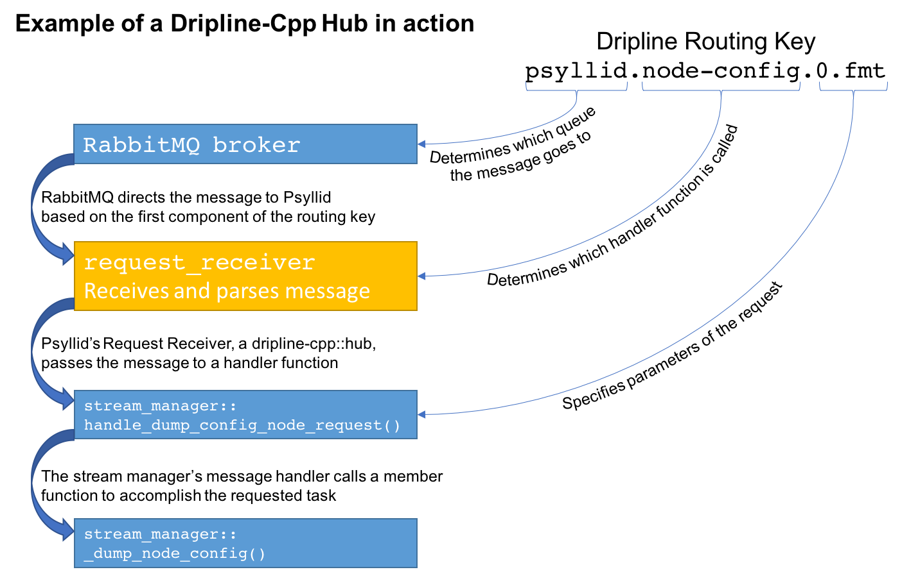

Dripline Library¶
The dripline-cpp library contains the following classes that are intended for use:
service: You want simple send and receive capabilities
hub: You want to receive messages and handle them with C++ function calls
relayer: You want to send messages asynchronously, and optionally wait for a reply
Service¶
A service has simple send and receive capabilities. A class that inherits from service should
override the on_X_message() functions according to the type(s) of messages it is setup to handle:
request, reply, and alert.
Hub¶
A hub is a service that is setup to receive requests and maps routing key specifiers to C++ handler functions. This allows you to, for example, receive requests intended for a variety of destinations within a single application and have the requests distributed accordingly.
Relayer¶
A relayer allows a user to asynchronously send messages. Replies can be waited on (either in the user’s thread or by setting up a thread to wait and then do something once it arrives) or ignored.